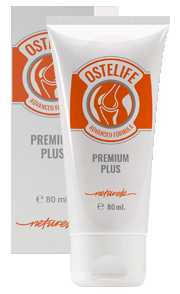

Profesorul Stoican: "De ce tratați articulațiile de ani de zile, când pot fi restaurate într-o lună!"
Cu privire la contribuția profesorului Stoican la tratamentul bolilor articulațiilor și cum să obțineți un medicament pentru a restabili articulațiile pe reducere, citiți articolul

În o echipă de cercetare condusă de profesorul Marinescu a efectuat o serie de teste de laborator ale unui medicament inovator pentru articulații. Rezultatele au depășit toate așteptările. O analiză comparativă a medicamentului dezvoltată de profesor cu farmaciile populare nu a lăsat nici o îndoială - o nouă eră vine în reumatologie! Cercetătorii au solicitat înregistrarea medicamentului și o cerere pentru începerea producției. Dar apoi sa produs o nenorocire - Profesorul Marinescu a părăsit această lume. Va fi oare preparatul eliberat vreodată? Această întrebare a fost adresată de corespondentul nostru principalului reumatolog al Ministerului Sănătății alRomâniei, Eugeniu Popescu, care a jucat, de asemenea, un rol semnificativ în cercetarea medicamentului.
Comentariu de la reumatologul șef Popescu. "Primul șoc după pierderea profesorului a trecut și ne-am angajat să aducem problema vieții sale până la sfârșit".
Corespondent: "Bună ziua, Eugeniu Popescu. Cum se petrec lucrurile cu privire la dezvoltarea medicamentului astăzi?"
E. Popescu: Bună ziua, Dumitru. Sunt bucuros să vă anunț că, după toate testele, a fost avut permisiunea de a introduce preparatul în sistemul de medicamente. Am numit medicamentul Ostelife.
Studiile clinice Ostelife și-au demonstrat eficacitatea ridicată în tratamentul articulațiilor - prin estimările cele mai conservatoare, acest medicament va extinde viața medie a persoanelor cu boli articulare timp de cel puțin 10 ani!
Corespondent: "Eugeniu Popescu, poteți să ne spuneți cum diferă Ostelife de mijloacele obișnuite din farmacie?"
E. Popescu: De regulă, pacienților cu afecțiuni ale articulațiilor li se prescrie una dintre următoarele medicamente:
- Genacol;
- Solaris Ceai;
- Manicos Crema;
- Plasturi Antireumatici;
- Sindoplast;
- AntiCărcel;
- ArtroCalm;
- Carpicon Plant Crema;
- Aquamin;
- Arthropyth Crema;
- Supramax Articulatii;
- Rumalaya;
- Apireven Crema;
- AntiReumatic;
- Artroplant Comprimate;
- Osteocare;
- Vaxicum;
- Proenzi Crema;
Să vedem ce complicații pot provoca afecțiuni ale articulațiilor. Dacă luați cele mai frecvente afecțiuni ale articulațiilor, este vorba despre:
| Afecțiuni | Complicații în etapele inițiale | Complicații în etapele dezvoltate |
|---|---|---|
| Artrită | Necroza cartilajului, distrugerea articulațiilor, sinovită | Distrugerea completă a articulației, sepsis, cancer de articulație |
| Artroză | Inflamația cartilajului, modificările structurii și degradarea articulației, există riscul de infectare sângelui | Dizabilitatea (eșecul articulației), distrugerea cartilajului, cancerul articulației |
| Оsteohondroză | Proeminențele intervertebrale, deplasarea discului intervertebral, nervii ciupiți | Hernia coloanei vertebrale, tulburări ale sistemului nervos central (sistemul nervos central), există riscul de eșec al organelor individuale, cancerului coloanei vertebrale |
| Coxartroză | Extinderea oaselor, modificări degenerative ale cartilajului și articulațiilor, modificări distrofice ale pungilor articulare | Limitarea activităților locomotorii (1 sau 2 grupuri de handicap), tumori de cancer |
| Оsteoporoză | Moartea țesutul conjunctiv, necroza osoasă (crește fragilitatea osoasă) | Deformarea oaselor individuale și a scheletului în ansamblu, eșecul membrelor, există riscul apariției cancerului datorat necrozei osoase |
| Bursită | Inflamația sacului sinovial periarticular, acumularea de exudat purulent | Contaminarea sângelui, eșecul articulației, putrezirea țesutului muscular, tumori maligne |
| Gută | Inflamația articulației piciorului, depunerea de sare, concentrația în oasele cristalelor de urină | Deformarea osului la nivelul piciorului și creșterea acestuia, modificarea dimensiunii articulației, necroza oaselor piciorului, apariția tumorilor benigne |
După cum puteți vedea, bolile articulațiilor, de fapt, duc adesea la complicații grave care sunt pline de dizabilități sau de deces ale pacientului. În ultimii 100 de ani, sarcina asupra scheletului uman a crescut continuu. Ca urmare, acum aproape fiecare persoană de 25 de ani are cel puțin 1-2 articulații afectate. Până la vârsta de 35-40 de ani, bolile trec de mult într-o etapă în care se pot dezvolta complicații grave.
Pentru ilustrația vizuală, vă puteți uita la fotografiile realizate în spitale:
1. 1. Articulația genunchiului unei persoane cu artroză, care a fost tratată prin metodele "clasice". Injecțiile de ceva timp i-au oferit ocazia de a nu simți durerea. Dar nu au împiedicat dezvoltarea bolii. Rezultatul a fost amputarea picioarelor. Omul a rămas invalid pentru totdeauna.

2. Consecințele osteohondrozei, care, de fapt, nu au fost tratate deloc, ci doar anesteziate. În total, au existat 2 tumori canceroase în care s-au întors herniile. Pacientul a fost încercat să fie salvat cu ajutorul unei intervenții chirurgicale, dar din păcate acest lucru nu a ajutat-o, femeia a murit.

3. 3. Consecințele artritei pulsului mâinii. După cum înțelegeți, este deja imposibil să faceți ceva într-o astfel de situație, când procesul inflamator a început deja și septicemia a început. Pacientul a fost amputat de palma mâinii și o parte din mână. Dar acest lucru nu la salvat, sepsisul sa răspândit în restul corpului și omul a murit după șase luni de tratament intensiv.

Și acum vom readuce conversația într-o direcție pozitivă. Profesorul Stoican, împreună cu cercetarea medicală, a studiat medicina alternativă de zeci de ani, în special secretele sibiene ale longevității și sănătății. Toate cunoștințele profesorului și experiența de cercetare a institutelor de cercetare sunt unite în produsul pe care l-am lansat - Ostelife. Componentele și extractele naturale conținute de Ostelife au fost capabile să furnizeze FACTORUL CHEIE al tratamentului - alimentarea cu sânge complet a articulației afectate. Este pur și simplu necesar să se asigure restabilirea alimentării cu sânge pentru a opri necroza și inflamația, în timp ce începe procesul de regenerare simultan. Problema este că pare să fie ușor, dar în practică nu a fost niciodată posibil să se pună în aplicare acest lucru înainte de oricare dintre opțiunile de tratament existente. Acum există un astfel de medicament și, în plus, după terminarea studiilor clinice, acesta este distribuit pe reducere 50% în cadrul unui program special.
Înainte ca medicamentul să fie selectat pentru distribuție în cadrul programului, s-au efectuat studii clinice ample. Au participat în total 10 120 de persoane din diferite grupe de vârstă și cu diferite boli ale articulațiilor. 93,8% au vindecat bolile lor complet. 5.6% au încă unele probleme, dar, în general, starea lor sa îmbunătățit semnificativ. Aproximativ, dacă cineva avea o formă severă de artrită și abia se putea plimba, atunci după terminarea cursului avea doar o ușoară durere periodică în articulație. Și numai la 0,6, îmbunătățirea stării a fost substanțială, dar nu suficientă pentru a fi atribuită celor care s-au recuperat complet.
Reporter: "Am auzit corect? Distribuiești cu adevărat acest medicament miraculos?"
E. Popescu.: Da, chiar este. În memoria profesorului Stoican, am organizat un fond numit după el, am primit finanțare de la stat și am lansat un program comun de reabilitare. Programul a fost alocat 324 milioane de roni de la stat și 27 milioane de fonduri comerciale ale Institutului de Cercetare a Reumatologiei. De aceea avem posibilitatea de a distribui "Ostelife" pe reducere 50%. Și da - chiar funcționează. Am controlat personal studiile clinice și vă pot confirma că medicamentul este extrem de eficient.

Vreau să arăt rezultatele studiilor clinice ale medicamentului Ostelife. Ei au surprins plăcut mulți medici. Pentru acei pacienți ai căror articulații dor deseori, va fi o adevărată salvare:

Durerea a dispărut într-o perioadă scurtă de timp în 100% dintre participanții la studiu.

Repararea cartilajului după ce a suferit osteopenie - la 98% dintre participanții la studiu

A scăpa de artrită și artroză după terminarea cursului - în 93% dintre participanții la studiu
Și acestea sunt imagini ale articulațiilor "înainte" și "după" utilizarea Ostelife
Reporter: "Impresionant. Spuneți-ne ce înseamnă pentru oamenii obișnuiți, boli ale articulațiilor?"
E. Popescu: Aceasta înseamnă că medicina românească modernă a făcut o descoperire serioasă și vă puteți vindeca bolile la domiciliu în una sau două luni. Ostelifie-ul nu îngheață, nu anesteziază, ci "repornește" corpul la nivel celular. Elimină cauzele durerilor și întoarce articulațiile, coloana vertebrală la starea inițială, normală. Pacientul nu scapă doar de simptome, ci elimină rădăcina bolii - slăbită de celulele lente, vechi, alimentarea cu sânge a cartilajului.
În prima zi, Ostelife lansează sistemul de regenerare a corpului. Ei bine, ameliorează durerea, imediat simți asta. Dupa 1,5 luni de tratament vor fi finalizate.
Reporter: "Ostelifie-ul ajută doar la anumite boli specifice?"
E. Popescu: Nu, vă spun: acționează la nivel celular, restabilind alimentarea cu sânge. Tratează orice boală asociată articulațiilor și coloanei vertebrale: artrită și artroză, osteoporoză, reumatism, guta și sciatică, radiculită și osteohondroză, deplasarea discurilor vertebrale. Orice boală a articulațiilor în orice etapă.
Reporter: "Și chiar, preparatul cu adevărat eliberează de toate aceste boli și nu doar elimină durerea?"
E. Popescu: Ostelife și elimină durerea articulațiilor (în stadiile inițiale ale tratamentului) și elimină complet boala. Desigur, există și alte opțiuni pentru tratarea bolilor, dar, de regulă, toate implică intervenții chirurgicale și sunt foarte periculoase pentru oameni. Să nu mai vorbim de faptul că costul intervențiilor chirurgicale pentru aceeași articulație a genunchiului este doar valabil și este accesibil pentru un număr foarte mic de persoane.

Certificat real
Reporter: "Cum pot oamenii să obțină pe reducere 50% programul Ostelife? Oricine poate face asta?"
E. Popescu: Da, absolut oricine. Există doar un singur "dar" - datorită volumelor mici de producție, programul acționează selectiv. Toți cei care au nevoie pot primi pe reducere Ostelife atunci când comandă un curs. Tot ce este necesar este să vă lăsați numele și numărul de telefon unde puteți fi contactat de către personalul centrului consultativ al programului.
Reporter: "Ce perioadă va funcționa programul?"
E. Popescu: Sfârșitul programului - (inclusiv). Până la această dată trebuie să lăsați o cerere pentru "Ostelife". Dacă nu ați făcut încă acest lucru, vă sfătuiesc să vă grăbiți, de atunci va fi imposibil să obțineți medicamentul pe reducere. Eu personal garantez că toate cererile rămase înainte de acest moment vor fi procesate și oamenii vor primi produsul.
Reporter: "Eugeniu Popescu, vă mulțumesc pentru interviu! Poate doriți să spuneți ceva cititorilor noștri înainte de a ne spune la revedere?"
E. Popescu: Da, desigur. Vreau să atrag atenția cititorilor asupra faptului că bolile spatelui și articulațiilor sunt "mai tinere" și chiar dureri periodice slabe sunt un motiv pentru a acorda atenție problemei. Doctorul nu te va convinge să te tratezi. După cum se spune, salvarea celui ce se îneacă este lucrarea mâinilor celui ce se îneacă.
Și rețineți: bolile cauzate de dureri de spate și articulații nu duc doar la disconfort. Scurtează viața cu 15-20 de ani.
Ferițivă de produse contrafăcute! Programul original Ostelife este disponibil exclusiv pe SITE-UL OFICIAL
Vă reamintim că programul este valabil numai până în data de inclusiv.
Ți-a plăcut articolul? Trimiteți-l prietenilor!


Cu respect Eugeniu Popescu


Cu respect Eugeniu Popescu
Cu respect Eugeniu Popescu


Există condiții excelente, grăbițivă!
L-am cumpărat pe site-ul oficial am sunat foarte repede și am confirmat comanda. Vreau să merg în cele din urmă fără dureri de spate, și să mă bucur de plimbări)


Cu respect, Eugeniu Popescu


Cu respect Eugeniu Popescu


Și feriți-vă, vă rog, de produse contrafăcute.
Cu respect Eugeniu Popescu

A început verificarea cu privire la abuzul în sistemul de sănătate

G. Olaru: "Ca un nou director al lanțului de farmacie, îți promit că vom lucra cinstit"

Unui bolnav de artrită a fost necesară amputarea piciorului

100 244 oameni au pierdut degetele din motivul articulațiilor bolnave

Care sunt complicațiile operației la articulațiile genunchilor